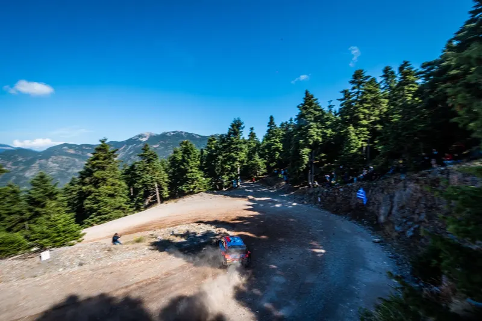

2024 Route Previews
Dark
Go
Home
News
Route Previews
2026 Route Previews
2025 Route Previews
2024 Route Previews
All route previews
Stats Database
Stats Posts
History
Acropolis Rally Posts
Acropolis Rally Posts
Route History of the Acropolis Rally
Top 30 Stages
Stages 1-5
Stages 6-10
Stages 11-15
Stages 16-20
Stages 21-25
Stages 26-30
The whole list
Concepts
Ελληνικά
About
2024 Route Previews
1
Rally Acropolis 2024 - Route Analysis
Preview ›

Route Preview
Rally Acropolis 2024 - Route Analysis
News
Route Previews
Stats Database
Stats Posts
History
Acropolis Rally Posts
Top 30 Stages
Concepts
Ελληνικά
About
Powerslide Media 2026 – All rights reserved